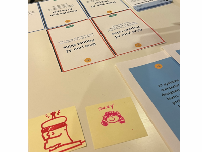

AI Puppet
Klara Nitsche, Krithik Ranjan and Suibi Che-Chuan Weng of ACME Lab | CU Boulder 2026
In submission as a WIP to TEI 2027
Robots & AI · Education
AI is rapidly shifting our methods of education- but not everyone is as adept at identifying it. Children, especially, are vulnerable to believing misinformation and trusting AI without critical examination. AI Puppet is a tool designed to be administered by educators in elementary and middle school classrooms and is intended to guide discussions with children about topics of AI transparency, anthropomorphism, and AI safety.
This project provides a scaffolded interaction where students design a chatbot persona; listing personality attributes, likes, dislikes, and programmed ‘tells’ (ex: if I mention green beans, start aggressively denying the existence of giants) to understand how models may contain biases and the limits of using an AI agent. Students also create visual representations of their chatbots through drawing or sculpting puppets, and use a text-to-speech extension to embody the puppet's character. This project was demoed at ATLAS Open Labs, where cursory feedback and post-it sketches of chatbot personas were collected from participants ranging between the target student demographic to elder adults.

Caught in the act of explaining the AI Puppet demo!